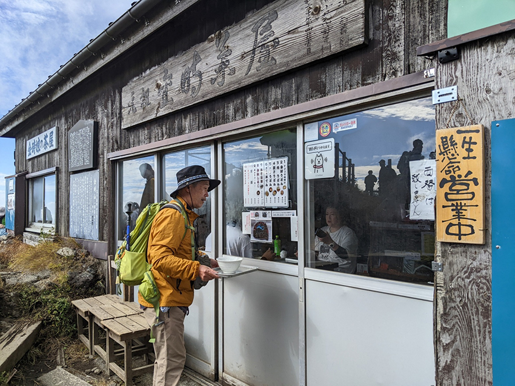

| 天下的秀峰──金時山絕景。 |
飽受疫情影響長達2年未能出國旅行，終於在2023年年底和朋友們安排了一次「跑旅」－－我們藉著參加「富士山馬拉松」比賽的行程，安排了一次充滿楓紅、溫泉與古意盎然的日本之旅～。
| 沿著河口湖畔俯拾即是的楓紅與富士山。 |
富士山馬拉松的比賽地點位於山梨縣的富士河口湖町，是位於富士山北麓的城鎮，賽事路線分成沿著河口湖一圈的29公里組與全馬組。懷抱飽覽11月底楓紅美景的期待，我們選擇報名29公里組，準備在限時6小時完賽的過程中，充分享受俯拾即是的富士山與河口湖景致。
| 選擇29K的賽事可以慢跑享受河口湖的美景。 |
在前往河口湖賽事場地前，我們特地安排了前往日本知名溫泉旅遊勝地「箱根町」，預計用2天半的時間，漫／慢遊古意盎然的箱根。相較於富士河口湖町，箱根是更為熱鬧的旅遊景點，而我們待在箱根的那幾天，適逢11月23日日本國定假日「勞動感謝日」，為了避開「網紅景點」讓人不耐煩的大排長龍，我們特地選擇了「金時山」登山與「舊東海道」健行如此「健康戶外」的行程。
接連兩天充實完整的戶外行程，有賴箱根知名的火山溫泉為我們洗去身體上的疲累，而舊東海道充滿歷史文化的底蘊，以及金時山遠眺富士山的無敵絕景，則為我們帶來無比豐富的心靈饗宴！
| 箱根舊東海道至今仍保持數百年前修築的模樣。 |
「舊東海道」可以理解成像是我們的「淡蘭古道」或「浸水營古道」等，在過去歷史上很長一段時間，由官方或民間參與整建的交通要道。因為是交通往來的重要通道，除了一些關隘遺址外，最讓我們念念不忘的便是箱根湯本到蘆之湖之間的「茶屋」了。
過去從箱根湯本到蘆之湖之間的東海道路線上下起伏，被視為東海道最艱難的路段之一。從前在鞍部或山頂營業的茶屋，便是旅行者在長途跋涉的路程中，重要的休息補給點。而300多年前經營至今的「甘酒茶屋」，無論是白茅草的屋頂，木構為主的建築，乃至於屋內為過路旅人提供的簍火、飲食，都仍維持著悠然懷古的氛圍。也難怪在我們行經至此，短暫駐足半個多小時的時間，就有非常多歐美旅客也慕名而來。
| 甘酒茶屋風中搖曳的招旗，招呼著過往旅人。 |
| 茶屋中的火煻與暖香甘酒，溫暖旅人脾肺。 |
與舊東海道健行不同，金時山的登山路線雖然也有步道，但更為陡峭與原始，在最後一段登頂的路線更要手腳並用攀爬，畫風一變成為十足的登山行程！
金時山的山名，來自於即便是我們也略有耳聞的日本知名神話人物，金太郎。相傳金太郎在出生於金時山與其北稜的足柄峠一帶，因此原名「豬鼻嶽」，隨著神話故事的流傳至今而被稱為金時山。
| 金時山登山步道。 |
當我們來到金時山的山頂，除了一如台灣登山會有的山頂基點或指標牌外，兩幢提供山頂飲食的茶屋更是讓我們感到特別。金時山的海拔1,212公尺，從海拔來說大約是台灣的中級山，但因為緯度與季節的關係，我們造訪當天的體感溫度低於10度，宛如來到台灣的高山。
|  |
| 充滿故事的「金時娘茶屋」。 |
| 熱騰騰又營養健康的蕈類味增湯。 |
不過得利於山頂的腹地與日本登山文化，兩座茶屋都是私人經營且年代久遠，在山頂提供溫暖的餐飲（與怎麼樣都不會退冰的冰啤酒～）。除此之外，登山口與山頂皆設有公廁，在一般腿力約2.5個小時的路程中，已可滿足絕大多數山友的生理需求，沿途也就不那麼容易看到在台灣中級山偶爾會看到的「小白花」。
| 每次使用需100元日幣的山頂公廁。 |
| 廁所中介紹生態廁所的運作機制。 |
更值得一提的是，山頂公廁因為環境與水源考量，無法設置沖水馬桶，而是採用「木屑」和排泄物攪拌發酵，並透過發酵過程加速尿液與排遺的水份蒸發，加速分解形成堆肥再利用，因為木屑與堆肥皆需人力搬運，因此山頂公廁使用也需酌收100元日幣的使用費。
透過簡單的技術與使用者付費的方式，運用微生物發酵的原理解決山友的生理需求，不僅保護了「天下的秀峰」金時山的美景，更為環境創造可持續的綠色循環！